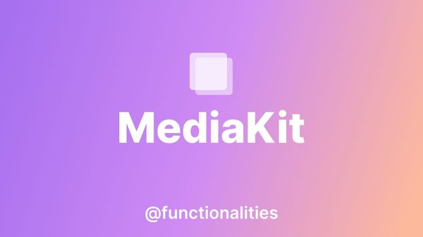
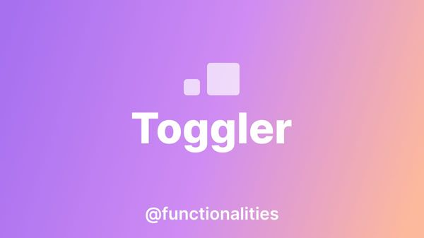
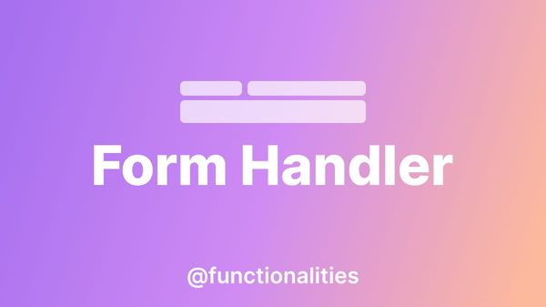
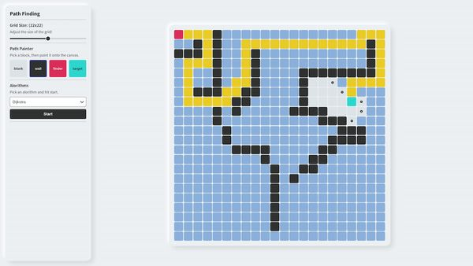

My projects
Hi, my name is Will and I'm a fullstack web developer. Below you'll find a selection of projects I've created over the years, ranging from websites, web apps, libraries and everything else in between.
- package
 @functionalities/mediakit
MediaKit is a backend utility package for processing, saving, getting and streaming images, files and video! We support both local and AWS S3 for storage.
- boilerplate

Static Site Generator
This is a minimal, but very flexible and powerful static site generator that is built around Express and LiquidJS. It also has filters for image optimisation and markdown.
- package
 @functionalities/toggler
Toggler is a frontend utility package that's sole purpose is to make class toggling easier. It's 100% markup/attribute based, so no extra JS/TS is required!
- package
@functionalities/stickyheader
Sticky header is a small frontend utility package for implementing a sticky header. It has three states for being at the top of the page, scrolling down and up.
- package

@functionalities/animations
Animations is a frontend animation utility package. It doesn't have any animations included, but it uses an intersection observer at its core to trigger classes.
- package
 @functionalities/formhandler
Form handler is a wrapper for sending and handling form errors and successes. It uses the browser's built-in input validation to check the form submitting.
- package

@functionalities/disclosure
Disclosure is a minimal frontend package for implementing accessible, lightweight disclosure components.
- WP plugin

BP Deploy
BP deploy is a WordPress plugin that allows you to trigger Bitbucket pipelines remotely. It has a simple interface where you can deploy and see previous deployments.
- website

Anyrep
Anyrep is an appliance repairs company based in Norwich, Norfolk. They needed a website to showcase their services and allow customers to contact them.
- web app
 Algorithm Visualiser
A small web app to display pathfinding and sorting algorithms. This project is still a work in progress and is intended as a learning experience.
- web app
Exodia Fitness - App
Plan workouts, track progression and monitor your health with a number of features including a water tracker, a weight tracker and a range of fitbit data.
- web app

Cover Maker
Cover maker is a graphic design tool for making playlist cover artwork. It has templates, media, shapes and text and allows you to export as an image or JSON.
- website
Exodia Fitness - Website
This is the marketing website for Exodia Fitness. A fitness tracking app that I built to learn VueJS, Stripe and Express.
- website
Melody Melon
Meloody Melon is a website built with NuxtJS, that aims to provide curated playlists for every occasion. It sports a unique design and a quick access playlist sidebar.